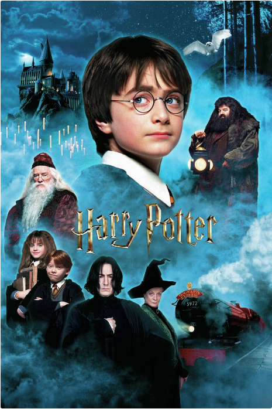

Harry Potter
Harry Potter é uma série de sete romances de fantasia escrita pela autora britânica J. K. Rowling. A série narra as aventuras de um jovem chamado Harry James Potter, que descobre aos 11 anos de idade que é um bruxo ao ser convidado para estudar na Escola de Magia e Bruxaria de Hogwarts. O arco de história principal diz respeito às amizades de Harry com outros bruxos de sua idade, como Ronald Weasley e Hermione Granger, e também com o diretor de Hogwarts Albus Dumbledore, considerado o maior dos magos, e seus conflitos com o bruxo das trevas Lord Voldemort, que pretende se tornar imortal, conquistar o mundo dos bruxos, subjugar as pessoas não-mágicas e destruir todos aqueles que estão em seu caminho, especialmente Harry Potter, a quem ele considera seu maior rival.
Desde o lançamento do primeiro romance, Harry Potter e a Pedra Filosofal, em 26 de junho de 1997, os livros ganharam uma imensa popularidade, aclamação da crítica e foram um sucesso comercial em todo o mundo. A série também recebeu algumas críticas, incluindo a preocupação com o tom cada vez mais sombrio conforme a história progredia. Até maio de 2015, já haviam sido vendidas 450 milhões de cópias em todo o mundo, tornando a série a best-seller da história, sendo traduzida para 73 idiomas. Os últimos quatro livros consecutivamente foram considerados os mais vendidos da história, sendo que o último livro vendeu cerca de 11 milhões de cópias nos Estados Unidos nas primeiras 24 horas após o seu lançamento.
A série abrange vários gêneros, como fantasia, vida escolar e passagem entre a infância e a juventude (com elementos de mistério, suspense, aventura e romance), sendo que a história tem muitos significados e referências culturais. De acordo com Rowling, o tema principal é a morte. Há também muitas outras temáticas na série, como preconceito e corrupção.
Os livros foram originalmente impressos em inglês por duas grandes editoras, a Bloomsbury do Reino Unido e a Scholastic Press nos Estados Unidos. A série já foi publicada por muitas editoras em todo o mundo. A adaptação para uma série composta por oito filmes feita pela Warner Bros. Pictures se tornou a série cinematográfica mais assistida da história. Tamanho sucesso fez com que a marca Harry Potter chegasse ao valor de 15 bilhões de dólares. Além disso, o parque temático The Wizarding World of Harry Potter foi introduzido em diversas unidades da Universal Parks & Resorts.
Enredo
Os romances giram em torno de Harry James Potter, um órfão que descobre com 11 anos que é um bruxo, que vive no mundo comum de pessoas não-mágicas, conhecidas como "trouxas". O mundo bruxo é mantido em segredo, presumivelmente para evitar a perseguição de bruxas e bruxos. Tal habilidade é inata e essas crianças são convidadas a participar de uma escola de magia exclusiva, que ensina as habilidades necessárias para ter sucesso no mundo bruxo. Harry torna-se um estudante da Escola de Magia e Bruxaria de Hogwarts e é ali onde a maioria dos eventos da série acontecem. Enquanto Harry se desenvolve através da adolescência, ele aprende a superar os problemas que ele enfrenta: mágicos, sociais e emocionais, incluindo desafios adolescentes comuns, como amizades, paixões e provas, e o grande teste de preparar a si mesmo para o confronto no mundo real que temos pela frente.
Cada livro narra um ano na vida de Harry, sendo que a narrativa principal se passa entre os anos de 1991 e 1998. Os livros também contêm muitos flashbacks, que são frequentemente vividos por Harry ao ver as lembranças de outros personagens em um dispositivo chamado penseira. O ambiente criado por Rowling é completamente separado da realidade mas também intimamente ligado a ela.
Adaptações
A enorme popularidade da série Harry Potter traduziu-se em um substancial sucesso financeiro para Rowling, suas editoras e outros proprietários de licenças relacionadas a Harry Potter. Os livros venderam mais de 450 milhões de cópias no mundo todo e também deram origem a adaptações cinematográficas muito populares, produzidas pela Warner Bros, sendo a primeira, Harry Potter e a Pedra Filosofal, na décima-quarta posição no ranking de filmes de maior bilheteria de todos os tempos, e Harry Potter e as Relíquias da Morte - Parte 2 em quarto neste mesmo ranking, com os outros seis filmes entre os 40 primeiros lugares.
Os livros foram transformados em cinco vídeo games e, incluindo os jogos e filmes, deram origem a mais de 400 produtos adicionais de Harry Potter (incluindo um iPod), que fizeram, em Julho de 2005, a marca Harry Potter ser estimada em 4 bilhões de dólares e J. K. Rowling uma bilionária em termos de dólares americanos, tornando-a, segundo alguns, mais rica que a Rainha Elizabeth II.